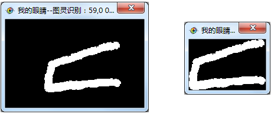

| 命令名称 | Filter_ValidCut 裁剪有效图像 |
| 命令功能 | (针对黑白图像处理)一键裁剪有效图像数据滤镜(裁剪四个角一样的颜色) |
| 语法格式 | TURING.Filter_ValidCut(Value) |
| 参数说明 | Value:字符串型，可选，裁剪方式（默认空：裁剪黑边，"auto"：四角相同颜色裁剪，可指定颜色"0000FF"） |
| 返回值 | 无 |
| 按键精灵 |
复制代码
'获取屏幕图像数据
Call TURING.Pixel_FromScreen(0, 0, 300,200)
'图像二值化滤镜处理
Call TURING.Filter_Binaryzation("0-178")
'显示图像预览
Call TURING.Pixel_Preview()
'一键裁剪有效图像数据滤镜（裁剪四个角一样的颜色）
Call TURING.Filter_ValidCut("auto")
'显示图像预览
Call TURING.Pixel_Preview()
|
| 滤镜效果 |  |